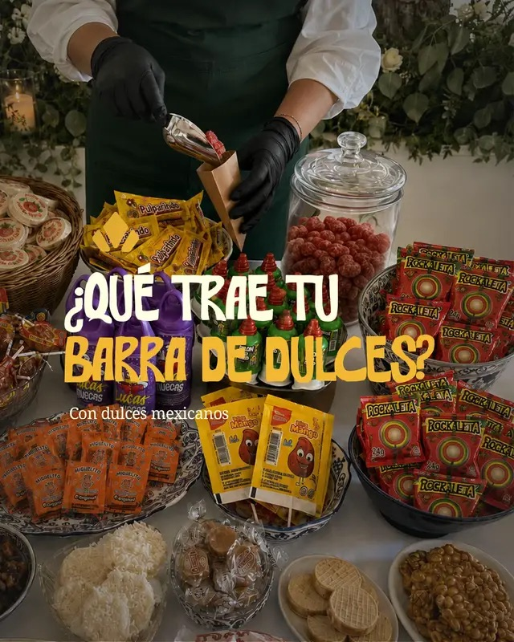
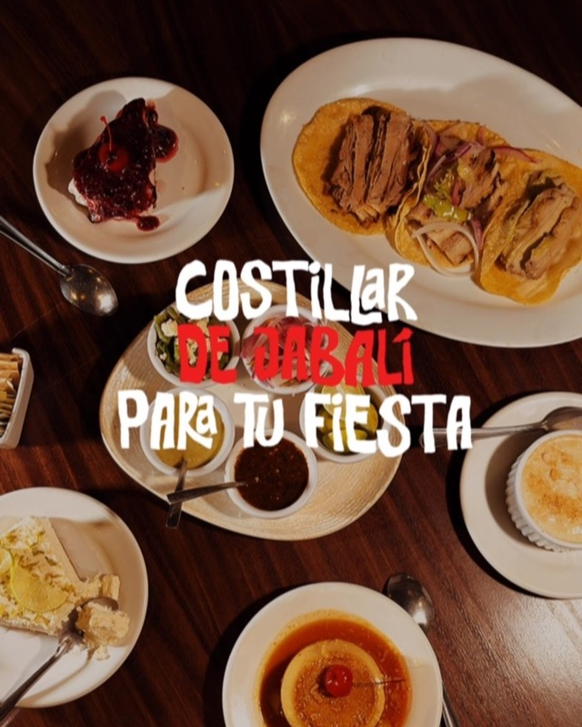
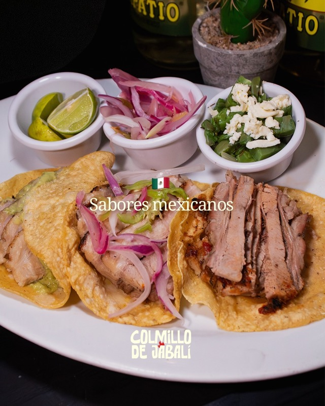

Reporte mensual de desempeño
Colmillo de Jabalí · Instagram y TikTok
Reproducciones de video
5,120
El video es el motor del mes: se lleva el 90% de todo lo que se vio.
Alcance en Instagram
624
Personas distintas que vieron contenido
Seguidores ganados
+20
Publicaciones
17
5 reels y 12 posts y carruseles, más 8 historias. Cada pieza se replica en TikTok, así que el total se cuenta una sola vez.
Interacción · Instagram
16.3%
102 interacciones
sobre 624 personas
Vistas totales
5,668
Movimiento del mes, día por día
El alcance se mueve por picos, no por goteo. Cinco días concentran la mayor parte del mes.
Origen de las reproducciones
Nueve de cada diez reproducciones vienen del algoritmo, no de gente que ya nos seguía. Es alcance nuevo, que es exactamente lo que se le pide a TikTok.
Las 17 piezas del mes, en orden de publicación
En el listado de Instagram, los cinco reels ocupan los cinco primeros lugares del mes. El primer post aparece hasta el sexto.
Reproducciones que pasan de 3 segundos
Búsquedas que llevaron a nuestro contenido
Dos de las cinco búsquedas son de Tula: el festival dejó rastro después del evento. Y dos son de fiestas patrias, semanas antes de la fecha.
Las 8 historias del mes generaron 170 vistas: casi la mitad de lo que dieron los 12 posts, con un tercio de las piezas.
Instagram · interacciones
TikTok · interacciones
Perfil y contacto
127 personas entraron a ver quién publicaba.
Mensajes
El seguimiento de mensajes y consultas arranca en septiembre.
Campañas publicitarias
Sin inversión en agosto
Todo el resultado del mes es orgánico. La pauta ya está definida y arranca en cuanto nos la compartan para activarla. Desde ese mes se reporta inversión, alcance, costo por resultado, CPC y CPM.

🍬 Tu banquete, con colmillo. Al cierre sale un bowl grande de dulce mexicano: Pelón Pelo Rico, Lucas Muecas, Rocaleta, Miguelito, mangos enchilados y tamarindos.
Llevamos todo el colmillo. 🔥 Este fin de semana montamos la parrilla en Tula Beer Fest, con costillar de jabalí, pollo asado y mucho más. Se cocinó ahí mismo, frente a todos.
A un banquete casi siempre le dices que sí sin haberlo probado. 🔥 Este sábado 15 y domingo 16 te esperamos en Tula de Allende con la parrilla prendida y el costillar sobre la brasa.

El arranque es la palanca: se quedó en 11% de retención contra 21% del promedio. Los reels que abren con el producto en el primer segundo sostienen el doble.

El mismo tema que arrasó en TikTok rindió 35 vistas como carrusel en Instagram. No es el tema: es el formato y la red.
Lectura del mes
Quien organiza una posada, una cena de empresa o una boda de noviembre está pidiendo cotizaciones ahora. Es el mes con más intención de compra del trimestre, aunque no haya un solo festival en el calendario. El contenido se orienta al banquete privado y cada pieza cierra pidiendo una fecha.
Agosto logró lo más difícil, que el jabalí quedara pegado al nombre. El riesgo ahora es quedarse ahí, cuando hay cuatro barras, montaje, servicio en el lugar y postre. Septiembre deja el jabalí al frente y abre el resto alrededor.
Cada parte del jabalí se cuece en un tiempo distinto y no todas quedan jugosas. El lomo sería la elección obvia para brasa; ustedes usan costillar, que es el que sale jugoso. Es verificable, y ningún competidor de la zona puede decirlo: la diferencia empieza antes de la brasa.
Seis reels en lugar de cuatro y diez publicaciones en lugar de doce. El total no se mueve: siguen siendo 24 contenidos. Sin festivales el alcance baja, y el video es el formato que sigue llegando a quien todavía no conoce la marca.
En agosto eran versiones chicas de las publicaciones. En septiembre son encuestas: ¿ya probaste jabalí?, ¿qué barra elegirías?, ¿qué estás celebrando? Cada respuesta es una persona levantando la mano, y la última lleva directo al mensaje.
Metas de septiembre